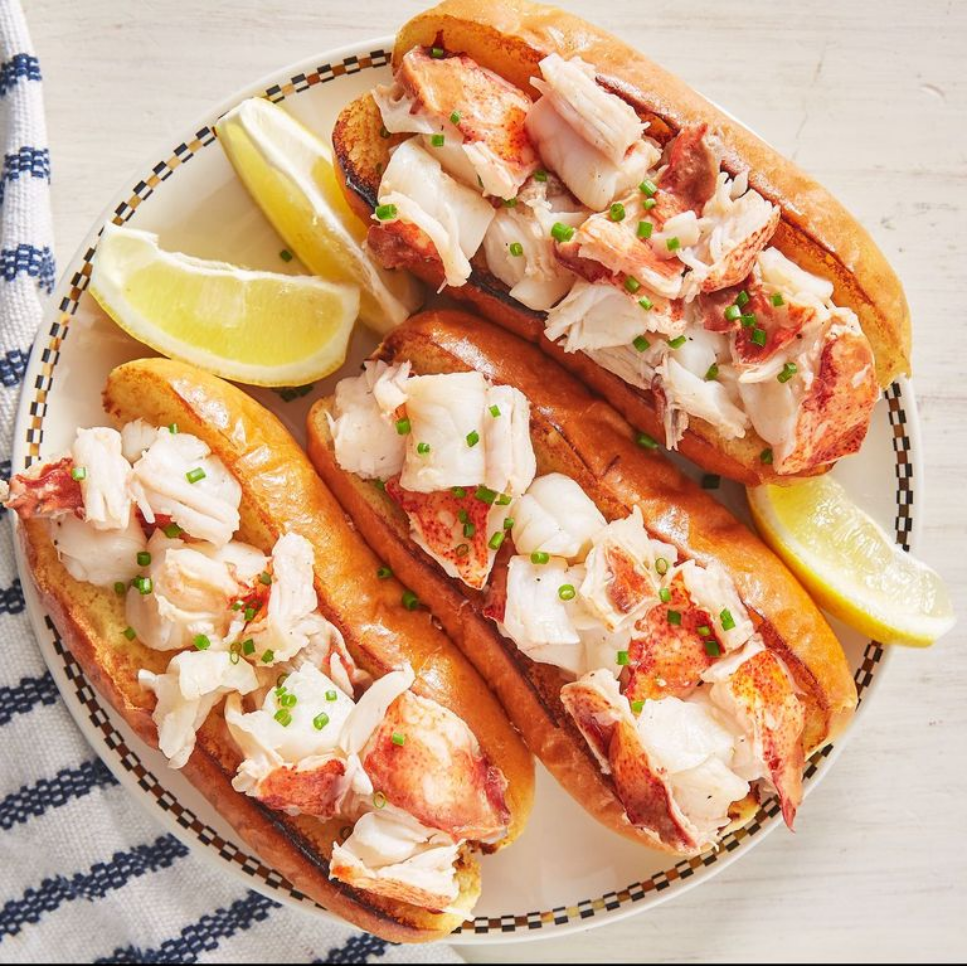
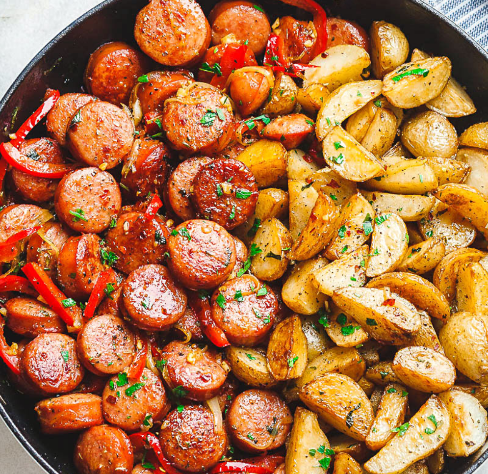
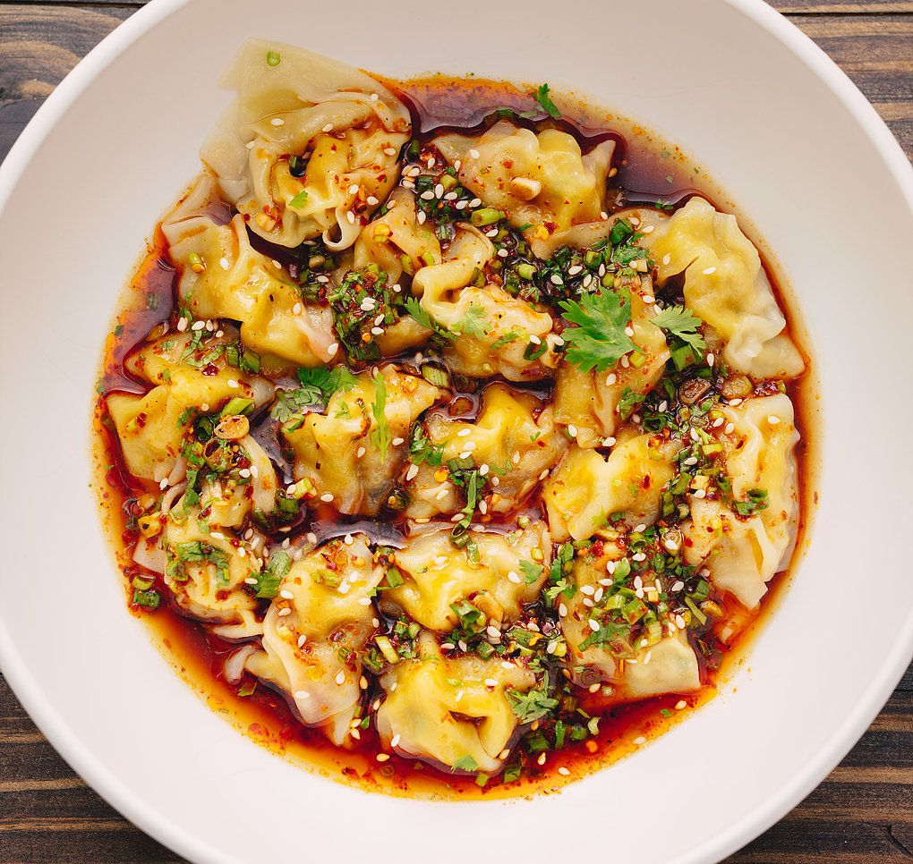

- 30 Minutes
- 7 Ingredients
- 3-5 Servings
Lobster Roll
Lobster has such a sweet, delicate flavor, strong seasoning or sauces easily overpower it.Discerning chefs know that only a little flavor enhancement–a dash of lemon or a touch of mayonnaise–is all that's needed for a delicious lobster roll.

- 10 Minutes
- 5 Ingredients
- 5-7 Servings
Smoked Sausage-Potato
Smoked Sausage and Potato Skillet full of delicious goodness with smoked sausage, potatoes, and bell peppers! Baby potatoes are quickly sauteed then paired with savory sausage and sweet bell peppers for a spicy/savory touch.

- 20 Minutes
- 5 Ingredients
- 4-10 Servings
Spicy Sichuan Wontons
One of the secrets of these epic dumplings is in the light and silky filling: pork, spring onion and ginger moistened with chicken stock and egg. Wontons can be prepped ahead and frozen or refrigerated, then cooked from frozen when you’re ready to serve them.